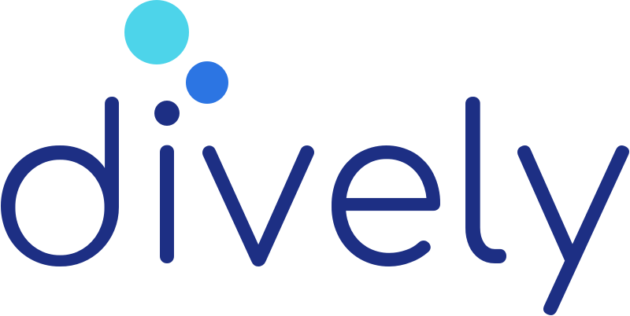
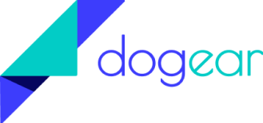

I'm Kelsey, a user experience and visual designer in Oakland, CA
Projects

Your dive logging assistant


Ease your writing process
Design process
Research and scoping
- Surveys, interviews, and problem identification
- Competitive analysis
- User personas
- User stories
Information architecture
- User flows
- Sitemapping
- Content strategy
- Sketching and wireframes
- Prototyping
- User testing
Visual design
- Name and logo design
- Style guides
- High-fidelity mockups and prototypes
- Preference testing
- User testing
Testing and deliverables
- User testing
- Front-end coding
- Developer deliverables
- Process presentation
Reference
"Kelsey is an extraordinary young woman that I mentored during her time at Bloc. In terms of her work and abilities, she is in the top 10% of the 300-400 students I have mentored. She has mastered the whole UX design process from start to finish within a very impressive timeframe.
I would describe her as:
- motivated
- proactive
- a fast learner
- professional
I would like to highly recommend her to anyone that is looking for a UX/Product designer that is genuinely working from a user-centered point of view and that has all the skills required to design a product from start to finish."
-Mike Dekker, Design Mentor at Bloc/Thinkful San Francisco